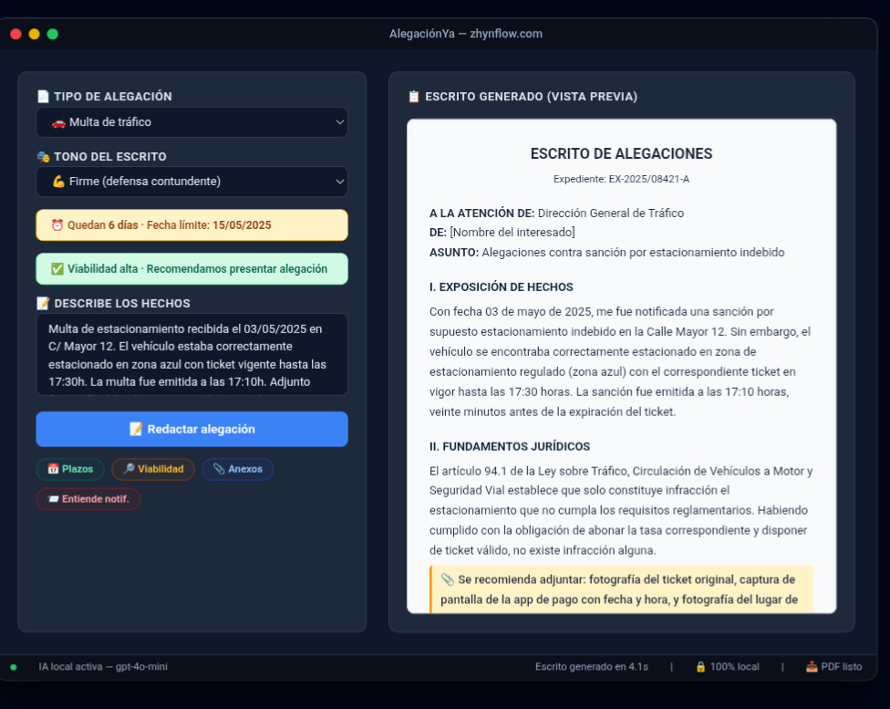

No pagues una multa sin luchar
Recibes una notificación de Hacienda, una multa de tráfico o la denegación de una ayuda. Sabes que tienes derecho a responder, pero no sabes cómo. Una gestoría te pide 150 € solo por redactar el escrito. AlegaciónYa lo hace por ti en minutos, por una fracción de ese coste y para siempre.
Mucho más que un generador de textos
AlegaciónYa no se limita a redactar. Te guía durante todo el proceso:
- Traduce la notificación a lenguaje claro para que entiendas qué te reclaman y por qué.
- Calcula el plazo exacto que te queda para presentar la alegación (días hábiles o naturales).
- Evalúa la viabilidad de tu caso con un test rápido que analiza tus opciones de éxito.
- Redacta el escrito completo con encabezado, exposición de hechos, fundamentos jurídicos y solicitud concreta.
- Sugiere los documentos anexos que debes adjuntar para reforzar tu defensa.
Tres tonos para tres momentos
No todas las alegaciones se presentan igual. Elige el tono que mejor se adapte a tu situación:
- Respetuoso: el clásico tono institucional cuando buscas una revisión objetiva.
- Firme: una defensa contundente que señala errores de la administración sin ser irrespetuoso.
- Técnico: lenguaje jurídico denso para procedimientos complejos o cuando ya tienes experiencia.
Tipos de procedimiento que cubre
- Multas de tráfico
- Requerimientos de Hacienda
- Sanciones de consumo
- Denegación de subvenciones
- Actas de inspección de trabajo
- Cualquier otra notificación administrativa
100% privado · 100% local
AlegaciónYa es un archivo HTML que se ejecuta en tu navegador. Tus datos nunca salen de tu ordenador. Utiliza tu propia clave de API de OpenAI. La licencia se valida una sola vez contra Lemon Squeezy y después funciona sin conexión.
Lo que recibes
Un archivo comprimido con:
- La herramienta completa en formato HTML.
- Instrucciones de uso rápido.
Pago único de 39 €. Sin suscripciones. La licencia es vitalicia.
Aviso importante
Esta herramienta ofrece una orientación preliminar generada por IA. No sustituye a un abogado ni a un gestor administrativo colegiado. Ante cualquier duda fundada, consulta con un profesional.
Lo que dicen los usuarios
«Me llegó una multa de tráfico que no era mía. AlegaciónYa me redactó el escrito en minutos, con referencias legales y todo. La administración me dio la razón.»
— Andrés P., autónomo
«Hacienda me reclamaba 600 € por un modelo que ya había presentado. Con la alegación que generó la herramienta, en dos semanas archivaron el expediente.»
— Clara M., contable
Empieza ahora
No dejes pasar el plazo. Redacta tu alegación, adjunta tus pruebas y defiende tus derechos.